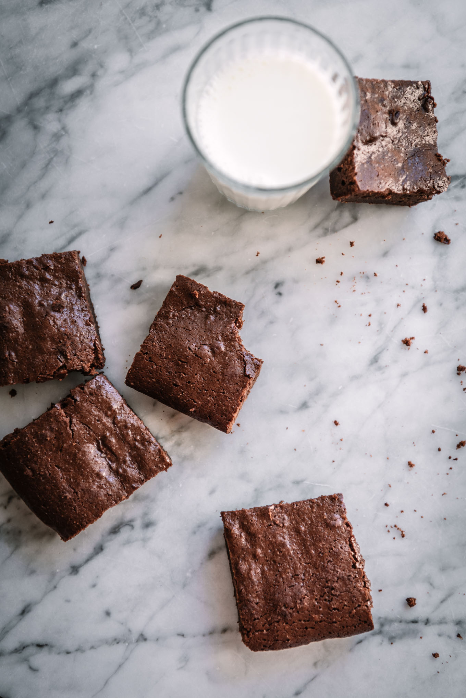

Receta del Brownie

ENLACE
Pasos
Elaboracion LINK
Ingredientes
- 180 g Chocolate 55% cacao Puedes usar mitad 55% y 70% de cacao
- 120 g de Mantequilla sin sal
- 80 g Harina todo uso
- 3 huevos temperatura ambiente
- Una pizca de sal
Ingredientes opcionales
- 50 g Nueces troceadas
- 1 cuchara Extracto de Vainilla
Elaboracion paso a paso
- Para hacer un Brownie, no necesitas ni siquiera utilizar robot o procesador de alimentos, tan solo el cuenco con las varillas manuales y luego la espátula para incorporar la harina
- Ya te he dicho que el chocolate es el protagonista….Pero qué chocolate debes de utilizar? Lo ideal es utilizar un chocolate de una concentración de cacao de al menos el 55% ….Pero si sois súper chocadictos en casa, también puedes combinar éste al 55% con uno al 70% en cantidades mitad y mitad por ejemplo! Fliparás con el intenso sabor!!
- Siempre lo digo en mis recetas y para ésta lo vuelvo a repetir, en repostería los huevos mejor si están a temperatura ambiente. Siempre las masas emulsionan mejor.
- Puedes usar aceite vegetal para esta receta, aunque yo siempre utilizo mantequilla (sin sal) pues me gusta más el resultado.
- El Brownie en casa no nos gusta muy dulce, yo para estas cantidades pongo 180g de azúcar, pero puedes ajustar la cantidad a tu gusto!
- Esta receta admite un huevo más si quisiera, pero para mí está perfecta con solo tres huevos. Lo que sí puedes hacer es batir bien la mezcla de los huevos con el azúcar hasta que esponjen, de esta manera no tendrás ni que añadir levadura pues ya le habrás incorporado algo de aire a la masa.
- Y el truco infalible que he aprendido probando decenas de recetas de blogs extranjeros …. El Brownie queda mejor si lo horneas en un molde metálico o de aluminio, que en los de cristal o cerámicos. De esta manera evitarás que se te horneen los bordes y te quede el centro del Brownie crudo. Este consejo lo dan otr@s cociner@s y la verdad, es que es cierto que queda mucho mejor 😉
- Otro consejo, no te limites a poner mantequilla al molde y hornear sin más!! Cubre la base del molde con un papel de horno humedecido (y escurrido el exceso de agua) para que sea mucho más fácil desmoldar.
- Y por último, hornea a 170º con calor arriba y abajo sin aire durante unos 25-30 minutos.